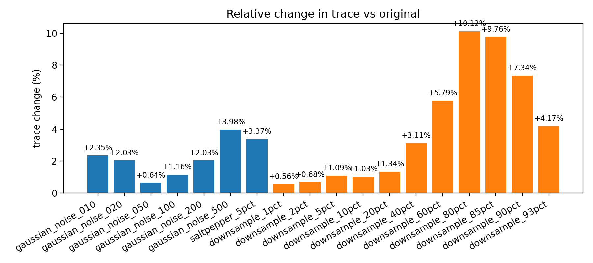
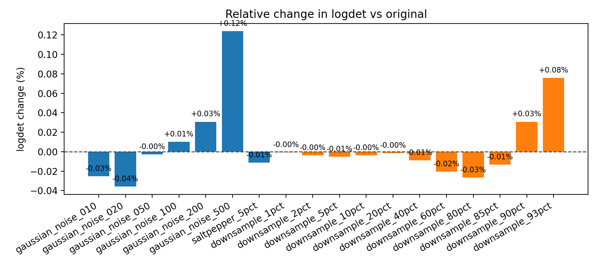
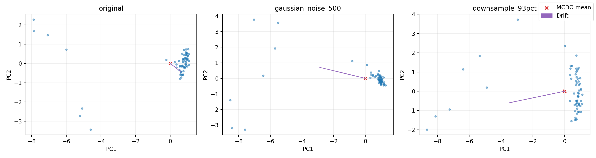
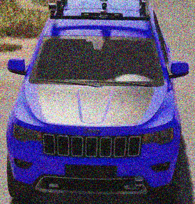
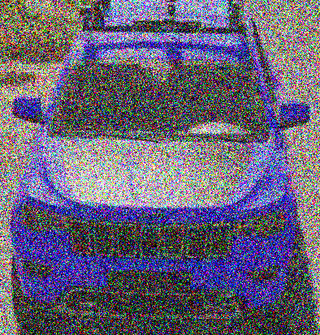
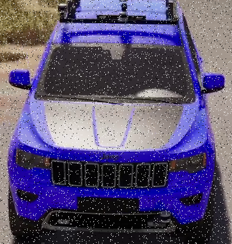
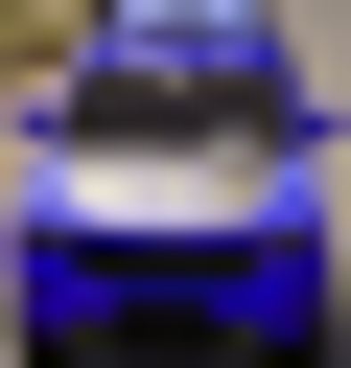

We study how additive noise and progressive downsampling alter the geometry of CLIP image embeddings when Monte Carlo Dropout (MCDO) is applied to the vision tower. The goal is to quantify how perturbations change the stochastic embedding cloud (variance, orientation, and mean drift) so we can anticipate failure modes in downstream retrieval or classification settings. All analyses focus on embedding-space diagnostics rather than classifier accuracy, mirroring a scientific report structure: we document the experimental configuration, define uncertainty metrics, and then interpret how those metrics respond to perturbations of increasing severity.
| transform | trace | logdet | off-diag mass |
|---|---|---|---|
| original | 12.3135 ± 2.6974 | -6376.0333 ± 10.0092 | 1609.7769 ± 490.2831 |
| gaussian_noise_010 | 12.6023 ± 2.7577 | -6374.4188 ± 9.8618 | 1637.2628 ± 489.9699 |
| gaussian_noise_020 | 12.5631 ± 2.6985 | -6373.7425 ± 9.3996 | 1578.3083 ± 471.0835 |
| gaussian_noise_050 | 12.3926 ± 2.6261 | -6375.8614 ± 8.2435 | 1554.1500 ± 465.1700 |
| gaussian_noise_100 | 12.4558 ± 2.5969 | -6376.6802 ± 7.1463 | 1554.7016 ± 455.9900 |
| gaussian_noise_200 | 12.5629 ± 2.5728 | -6377.9926 ± 6.7516 | 1515.4276 ± 458.6859 |
| gaussian_noise_500 | 12.8031 ± 2.7534 | -6383.9255 ± 6.6858 | 1419.4581 ± 431.2209 |
| saltpepper_5pct | 12.7279 ± 2.5296 | -6375.3044 ± 6.3954 | 1533.5533 ± 450.0526 |
| downsample_1pct | 12.3825 ± 2.6268 | -6375.9890 ± 9.1654 | 1581.4901 ± 470.5102 |
| downsample_2pct | 12.3977 ± 2.6292 | -6375.7912 ± 9.2649 | 1582.6807 ± 469.3839 |
| downsample_5pct | 12.4478 ± 2.6403 | -6375.7133 ± 9.0908 | 1583.8291 ± 468.7956 |
| downsample_10pct | 12.4398 ± 2.6474 | -6375.7898 ± 9.0936 | 1583.6615 ± 468.6407 |
| downsample_20pct | 12.4790 ± 2.6145 | -6375.9428 ± 8.7840 | 1585.3060 ± 469.0101 |
| downsample_40pct | 12.6968 ± 2.5948 | -6375.4607 ± 8.3049 | 1591.4691 ± 464.4259 |
| downsample_60pct | 13.0259 ± 2.5301 | -6374.7296 ± 7.5273 | 1596.7464 ± 451.3209 |
| downsample_80pct | 13.5591 ± 2.5690 | -6374.3342 ± 6.5821 | 1558.9208 ± 451.8482 |
| downsample_85pct | 13.5157 ± 2.6575 | -6375.1753 ± 6.4177 | 1530.2184 ± 465.0788 |
| downsample_90pct | 13.2171 ± 2.5903 | -6377.9928 ± 6.2483 | 1445.2168 ± 435.0733 |
| downsample_93pct | 12.8271 ± 2.6290 | -6380.8724 ± 6.6015 | 1409.7417 ± 420.4236 |
Baseline trace is 12.31, with logdet -6376.03 and off-diagonal mass 1609.78. Noise and downsampling progressively broaden the covariance while gradually reducing logdet, especially for the most aggressive settings.
| transform | trace | logdet | off-diag mass |
|---|---|---|---|
| original | 5.12e-04 | -7073.5400 | 0.0000 |
| gaussian_noise_010 | 5.12e-04 | -7073.5400 | 0.0000 |
| gaussian_noise_020 | 5.12e-04 | -7073.5400 | 0.0000 |
| gaussian_noise_050 | 5.12e-04 | -7073.5400 | 0.0000 |
| gaussian_noise_100 | 5.12e-04 | -7073.5400 | 0.0000 |
| gaussian_noise_200 | 5.12e-04 | -7073.5400 | 0.0000 |
| gaussian_noise_500 | 5.12e-04 | -7073.5400 | 0.0000 |
| saltpepper_5pct | 5.12e-04 | -7073.5400 | 0.0000 |
| downsample_1pct | 5.12e-04 | -7073.5400 | 0.0000 |
| downsample_2pct | 5.12e-04 | -7073.5400 | 0.0000 |
| downsample_5pct | 5.12e-04 | -7073.5400 | 0.0000 |
| downsample_10pct | 5.12e-04 | -7073.5400 | 0.0000 |
| downsample_20pct | 5.12e-04 | -7073.5400 | 0.0000 |
| downsample_40pct | 5.12e-04 | -7073.5400 | 0.0000 |
| downsample_60pct | 5.12e-04 | -7073.5400 | 0.0000 |
| downsample_80pct | 5.12e-04 | -7073.5400 | 0.0000 |
| downsample_85pct | 5.12e-04 | -7073.5400 | 0.0000 |
| downsample_90pct | 5.12e-04 | -7073.5400 | 0.0000 |
| downsample_93pct | 5.12e-04 | -7073.5400 | 0.0000 |
All deterministic baselines remain numerically identical: covariance mass collapses to machine precision (trace 5.12e-04) with zero off-diagonal structure, underscoring that stochasticity is solely induced by dropout.
| transform | Δ trace (%) | Δ logdet | Δ off-diag (%) |
|---|---|---|---|
| gaussian_noise_010 | 2.35 | 1.6145 | 1.71 |
| gaussian_noise_020 | 2.03 | 2.2908 | -1.95 |
| gaussian_noise_050 | 0.64 | 0.1719 | -3.46 |
| gaussian_noise_100 | 1.16 | -0.6468 | -3.42 |
| gaussian_noise_200 | 2.03 | -1.9593 | -5.86 |
| gaussian_noise_500 | 3.98 | -7.8921 | -11.82 |
| saltpepper_5pct | 3.37 | 0.7289 | -4.74 |
Trace grows steadily with σ; at σ=0.50 it reaches 12.80 (≈+4.0% vs baseline) while logdet drops to -6383.93, signalling that variance is expanding yet concentrating into fewer dominant axes.



| transform | Δ trace (%) | Δ logdet | Δ off-diag (%) |
|---|---|---|---|
| downsample_1pct | 0.56 | 0.0444 | -1.76 |
| downsample_2pct | 0.68 | 0.2421 | -1.68 |
| downsample_5pct | 1.09 | 0.3200 | -1.61 |
| downsample_10pct | 1.03 | 0.2436 | -1.62 |
| downsample_20pct | 1.34 | 0.0905 | -1.52 |
| downsample_40pct | 3.11 | 0.5727 | -1.14 |
| downsample_60pct | 5.79 | 1.3038 | -0.81 |
| downsample_80pct | 10.12 | 1.6991 | -3.16 |
| downsample_85pct | 9.76 | 0.8580 | -4.94 |
| downsample_90pct | 7.34 | -1.9594 | -10.22 |
| downsample_93pct | 4.17 | -4.8391 | -12.43 |
Downsampling beyond 60% sharply increases trace (e.g., 93% reduction → trace 12.83) while logdet falls to -6380.87, indicating uncertainty balloons along a handful of directions once spatial detail is largely removed.


| transform | L2 shift | Mahalanobis shift |
|---|---|---|
| original | 1.5934 ± 0.2906 | 806.9347 ± 97.6104 |
| gaussian_noise_010 | 2.7813 ± 0.6508 | 1666.2401 ± 255.5203 |
| gaussian_noise_020 | 3.6054 ± 0.6817 | 2227.3307 ± 358.3126 |
| gaussian_noise_050 | 4.3841 ± 0.6772 | 2788.7280 ± 342.4279 |
| gaussian_noise_100 | 5.1952 ± 0.9378 | 3367.2794 ± 419.5660 |
| gaussian_noise_200 | 6.5398 ± 1.0501 | 4228.4310 ± 535.9685 |
| gaussian_noise_500 | 8.7011 ± 0.8827 | 5537.6085 ± 582.0240 |
| saltpepper_5pct | 5.8839 ± 0.9645 | 3828.5899 ± 468.3757 |
| downsample_1pct | 2.9156 ± 0.7442 | 1763.3735 ± 465.4738 |
| downsample_2pct | 2.9370 ± 0.7538 | 1767.1616 ± 482.2413 |
| downsample_5pct | 3.0156 ± 0.7507 | 1832.2940 ± 465.8001 |
| downsample_10pct | 3.1176 ± 0.7988 | 1908.4585 ± 494.0486 |
| downsample_20pct | 3.3776 ± 0.8529 | 2091.0686 ± 520.2487 |
| downsample_40pct | 4.0572 ± 0.8832 | 2561.1259 ± 518.2966 |
| downsample_60pct | 5.1260 ± 0.8931 | 3215.4408 ± 481.4732 |
| downsample_80pct | 6.9914 ± 0.7538 | 4419.8093 ± 534.7429 |
| downsample_85pct | 7.7168 ± 0.6615 | 4915.8207 ± 549.4709 |
| downsample_90pct | 8.8262 ± 0.6330 | 5610.9697 ± 584.7671 |
| downsample_93pct | 9.3279 ± 0.6722 | 5948.2206 ± 621.6978 |


| transform | tangent trace | tangent λmax | spectral entropy | top-10 share | circular variance |
|---|---|---|---|---|---|
| original | 8.5239 ± 1.6899 | 2.2936 ± 0.9171 | 2.5811 ± 0.2383 | 0.7565 ± 0.0436 | 0.0633 ± 0.0157 |
| gaussian_noise_010 | 8.7489 ± 1.7260 | 2.3569 ± 0.9274 | 2.5859 ± 0.2303 | 0.7557 ± 0.0424 | 0.0654 ± 0.0161 |
| gaussian_noise_020 | 8.7992 ± 1.6985 | 2.3006 ± 0.9398 | 2.6201 ± 0.2280 | 0.7518 ± 0.0420 | 0.0631 ± 0.0155 |
| gaussian_noise_050 | 8.5107 ± 1.6004 | 2.2645 ± 0.9120 | 2.5796 ± 0.2205 | 0.7574 ± 0.0400 | 0.0617 ± 0.0152 |
| gaussian_noise_100 | 8.4447 ± 1.5670 | 2.2813 ± 0.9015 | 2.5460 ± 0.2187 | 0.7620 ± 0.0389 | 0.0625 ± 0.0152 |
| gaussian_noise_200 | 8.2401 ± 1.3829 | 2.1899 ± 0.8128 | 2.5005 ± 0.2321 | 0.7685 ± 0.0389 | 0.0601 ± 0.0144 |
| gaussian_noise_500 | 7.7364 ± 1.4081 | 2.0397 ± 0.7857 | 2.3501 ± 0.2266 | 0.7948 ± 0.0384 | 0.0552 ± 0.0146 |
| saltpepper_5pct | 8.6093 ± 1.3903 | 2.2036 ± 0.8332 | 2.5686 ± 0.2253 | 0.7608 ± 0.0370 | 0.0626 ± 0.0142 |
| downsample_1pct | 8.6512 ± 1.6931 | 2.3227 ± 0.9141 | 2.5873 ± 0.2266 | 0.7572 ± 0.0406 | 0.0619 ± 0.0148 |
| downsample_2pct | 8.6612 ± 1.6923 | 2.3173 ± 0.9090 | 2.5889 ± 0.2245 | 0.7570 ± 0.0402 | 0.0620 ± 0.0149 |
| downsample_5pct | 8.6939 ± 1.6944 | 2.3229 ± 0.9144 | 2.5880 ± 0.2230 | 0.7574 ± 0.0400 | 0.0620 ± 0.0147 |
| downsample_10pct | 8.6884 ± 1.7005 | 2.3288 ± 0.9098 | 2.5866 ± 0.2215 | 0.7574 ± 0.0397 | 0.0620 ± 0.0147 |
| downsample_20pct | 8.7053 ± 1.6775 | 2.3396 ± 0.9162 | 2.5793 ± 0.2160 | 0.7591 ± 0.0387 | 0.0620 ± 0.0147 |
| downsample_40pct | 8.8511 ± 1.6547 | 2.3567 ± 0.9101 | 2.5755 ± 0.2080 | 0.7617 ± 0.0360 | 0.0625 ± 0.0144 |
| downsample_60pct | 8.9885 ± 1.5274 | 2.3026 ± 0.8298 | 2.5678 ± 0.1983 | 0.7650 ± 0.0341 | 0.0626 ± 0.0141 |
| downsample_80pct | 9.0825 ± 1.4530 | 2.2022 ± 0.7401 | 2.5403 ± 0.2095 | 0.7721 ± 0.0330 | 0.0598 ± 0.0141 |
| downsample_85pct | 8.8670 ± 1.4370 | 2.1181 ± 0.7449 | 2.5217 ± 0.2287 | 0.7726 ± 0.0357 | 0.0585 ± 0.0141 |
| downsample_90pct | 8.6496 ± 1.3900 | 2.1075 ± 0.7272 | 2.5033 ± 0.2229 | 0.7787 ± 0.0332 | 0.0573 ± 0.0138 |
| downsample_93pct | 8.2983 ± 1.4501 | 2.0909 ± 0.7254 | 2.4687 ± 0.2265 | 0.7821 ± 0.0337 | 0.0577 ± 0.0140 |


We evaluate trace and log-determinant stability across Monte Carlo pass counts T ∈ {2,4,8,16,32,64,128}. Lower T increases estimator noise; curves should flatten as T grows. See stability plots in this section if generated.


| class | trace (original) | trace (saltpepper_5pct) | Δ noise | trace (downsample_93pct) | Δ downsample |
|---|---|---|---|---|---|
| Indigo | 11.3669 ± 1.6120 | 11.7008 ± 1.3592 | 0.3339 | 12.2583 ± 1.2720 | 0.8914 |
| Magenta | 11.9280 ± 3.2723 | 12.0372 ± 3.4081 | 0.1091 | 12.6884 ± 3.7444 | 0.7603 |
| Moose3 | 12.6069 ± 3.3034 | 14.2672 ± 3.0083 | 1.6603 | 13.4894 ± 3.3945 | 0.8825 |
| White | 13.1045 ± 2.9819 | 12.9342 ± 2.4708 | -0.1703 | 13.2767 ± 2.5596 | 0.1722 |
| Wolf2 | 11.7160 ± 2.8515 | 12.8059 ± 2.5326 | 1.0899 | 12.2501 ± 2.4074 | 0.5341 |
| Yellow | 13.2319 ± 2.3014 | 13.0068 ± 2.1829 | -0.2251 | 13.1653 ± 2.5896 | -0.0666 |




Predictive mutual information (epistemic) and entropy are derived from the CLIP text head over class prompts. They remain near-zero here due to prompt unanimity and low dropout; we include them for completeness.